02:00
Wizard framework anatomy
Annotated slide showing the wizard step navigator, step labels, wizard section, question area, wizard actions, and feedback panel.
Learning website from demo recording
A structured, screenshot-backed guide that turns the recorded demo into a learnable reference for configuring ServiceNow catalog wizards, templates, UI Builder rendering, and wizard actions.
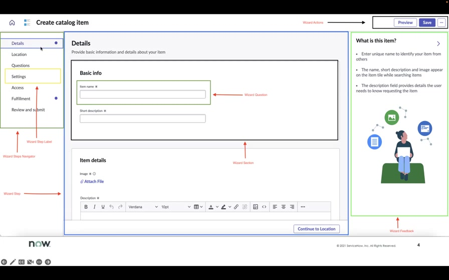
How to use this guide
Start with the data model, then follow the build sequence, then use the implementation internals and checklist when you need to reproduce the pattern in another catalog flow.
Module
The recording explains how Service Catalog Wizard framework turns a catalog item or composite record producer into a guided multi-step experience. The sample used throughout is Open Bank Account.
Module
The central chain is Producer → Catalog Wizard → Wizard Steps → Wizard Sections → Wizard Questions. Templates and action configurations are optional but powerful extensions.
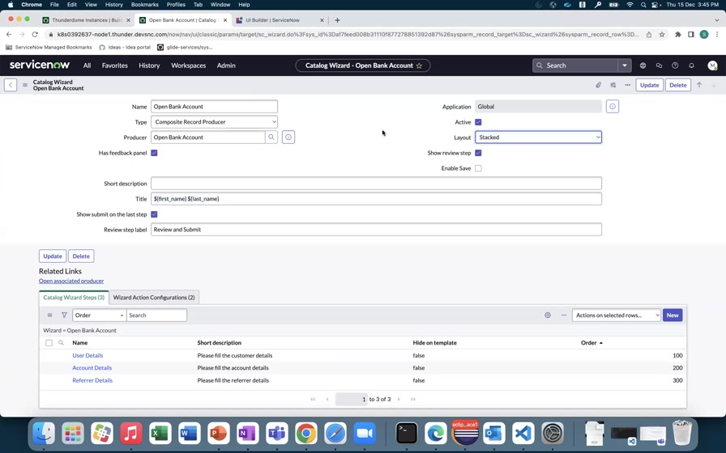
Module
The demo repeatedly moves between the ServiceNow classic configuration forms, UI Builder, and runtime preview to prove that configuration changes are reflected in the final wizard.
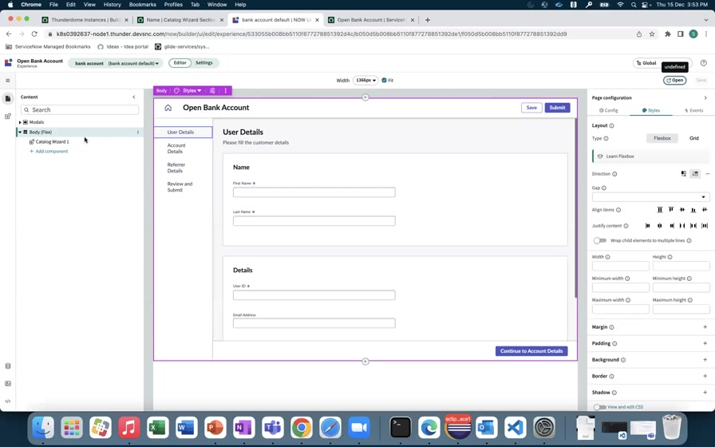
Module
Templates let an admin or template creator prefill questions, enforce mandatory values, restrict values, or mark fields read-only for item owners.
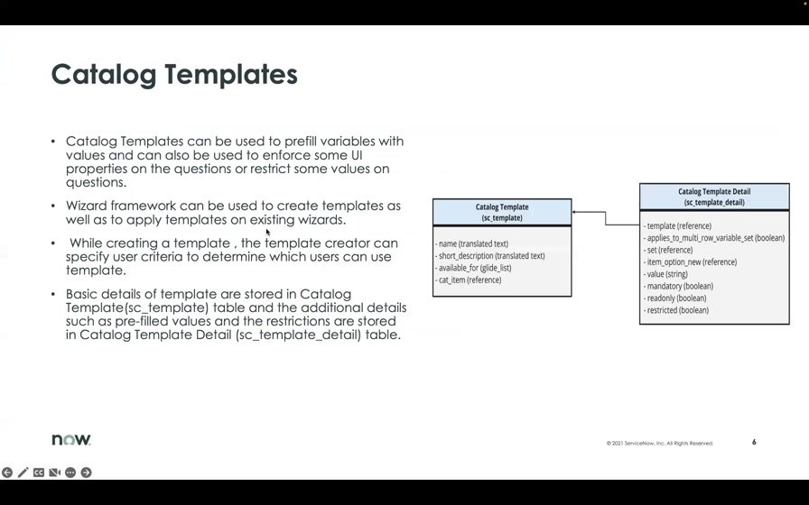
Module
The final wizard gives the user a structured intake page with step navigation, card-based sections, validation, action buttons, and submit controls.
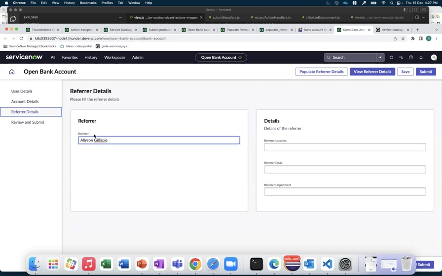
Module
The demo does not stop at configuration. It opens the repository and Java/backend handlers to show how the wizard component is implemented.
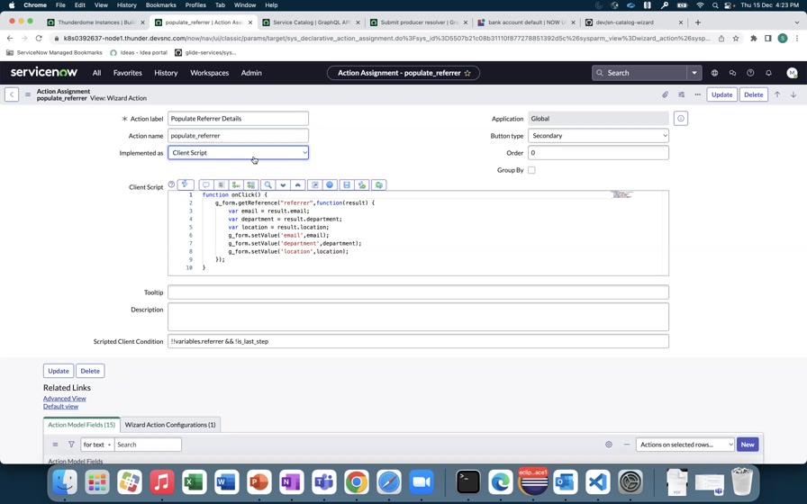
Object map
This table is the fastest way to recall which record is responsible for which part of the wizard.
| Object / table concept | Purpose | Demo example |
|---|---|---|
| Composite Record Producer | Main producer/catalog intake record | Open Bank Account |
| Producer Set | Target-record definition and variable grouping | Create Bank Account mapped to Bank Account table |
| Catalog Wizard | Top-level wizard wrapper around a producer | Open Bank Account wizard with stacked layout |
| Catalog Wizard Step | Step shown in left navigation | User Details, Account Details, Referrer Details, Review and Submit |
| Catalog Wizard Section | Visual section/card within a step | Name, Details, Account Type, Branch Details |
| Catalog Wizard Question | Question/variable displayed inside a section | First Name, Last Name, Account Type, Branch Code |
| Catalog Template | Reusable template header | sc_template |
| Catalog Template Detail | Field-level template rule | sc_template_detail |
| Wizard Action Configuration | Action rendered or triggered in the wizard | Populate Referrer Details, View Referrer Details |
| UI Builder Catalog Wizard component | Runtime component placed on a page | Component properties and event mappings |
Build checklist
Use this when implementing a new wizard or debugging why an existing wizard does not render correctly.
Screenshots
These screenshots were selected where they clarify the object model, configuration flow, runtime behavior, code path, or event/action integration.
Annotated slide showing the wizard step navigator, step labels, wizard section, question area, wizard actions, and feedback panel.
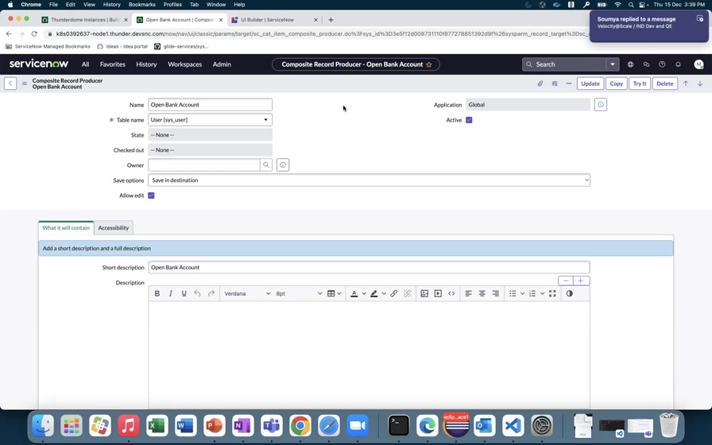
The Open Bank Account composite record producer that backs the wizard experience.
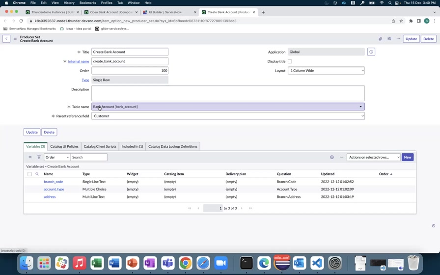
Create Bank Account producer set mapped to Bank Account, with variables for branch code, account type, and address.
Catalog Wizard record with producer, layout, review step, title expression, and related wizard steps.
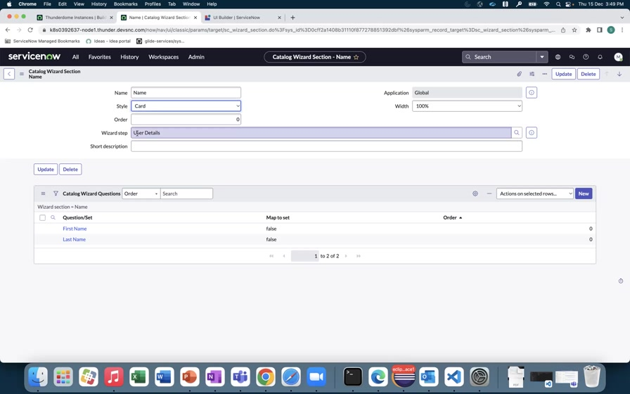
Catalog Wizard Section named Name, type Card, linked to User Details, with first and last name questions.
Template concept slide showing sc_template and sc_template_detail and their relationship.
The Catalog Wizard component rendered inside a UI Builder page for Open Bank Account.
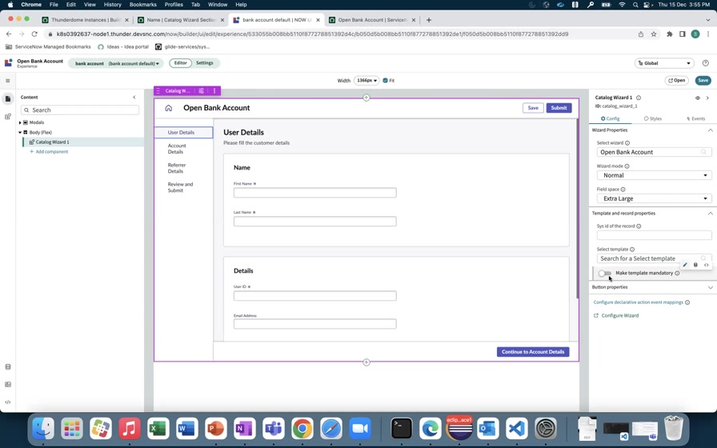
UI Builder properties for selecting the wizard, mode, field spacing, template, and mandatory-template behavior.
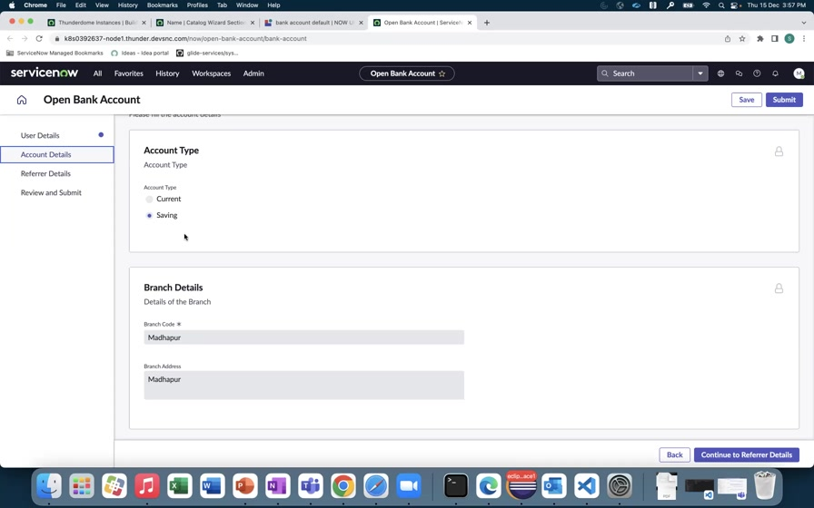
End-user wizard runtime showing Account Details and Branch Details with Back and Continue buttons.
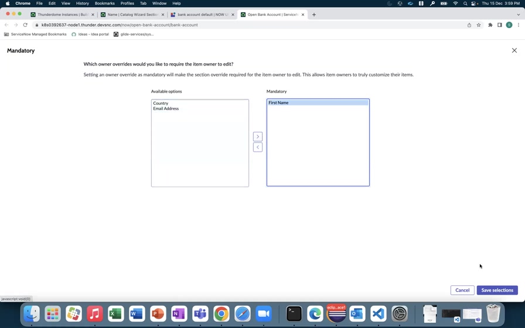
Mandatory override modal where template owners choose fields that must be edited by an item owner.
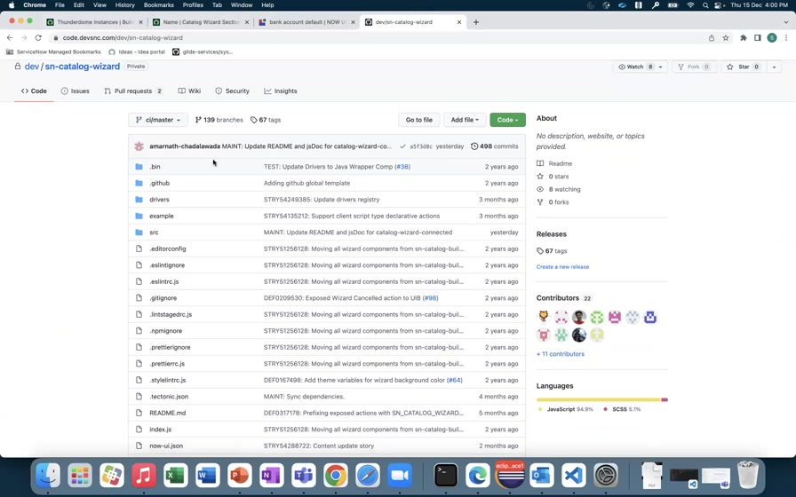
sn-catalog-wizard source repository showing frontend components, drivers, setup, and README.
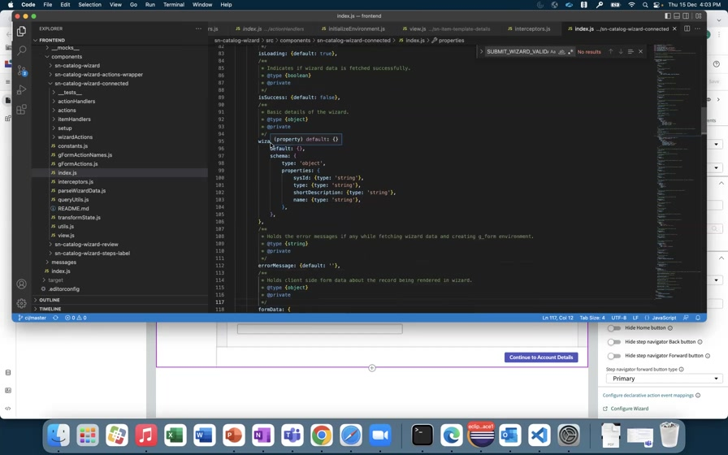
Catalog wizard connected component properties such as wizard data, loading, success, and error message.
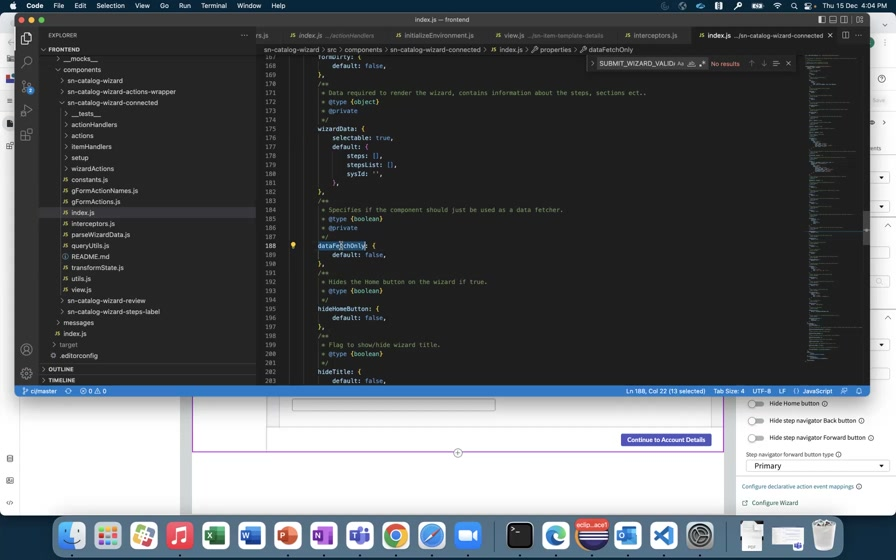
Component data model showing wizardData and dataFetching flags used by the connected component.
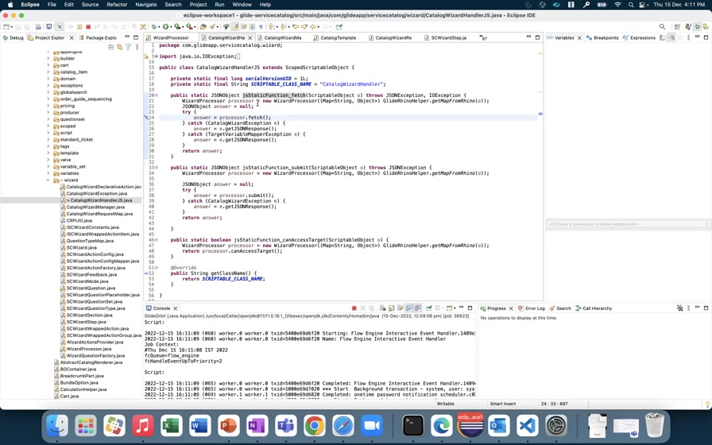
Eclipse view of CatalogWizardHandlerJus and related Java classes that invoke wizard processor methods.
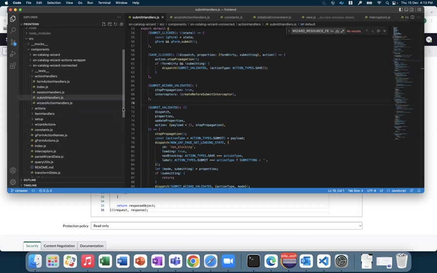
Frontend submit handler code for save, submit, validation, payload creation, and busy state.
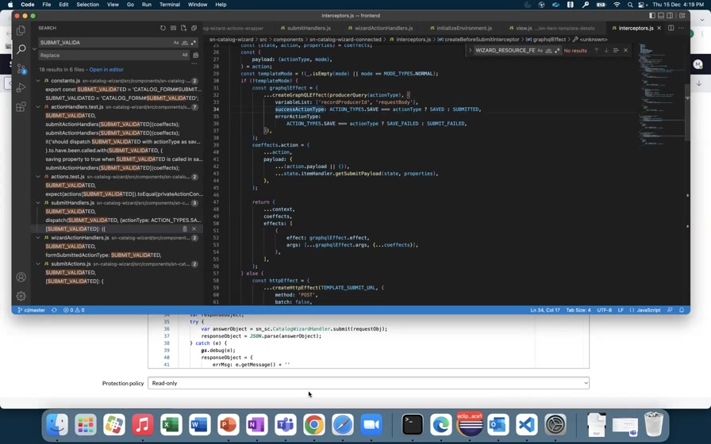
Interceptor logic that posts payload to the template-submit URL and handles successful or failed actions.
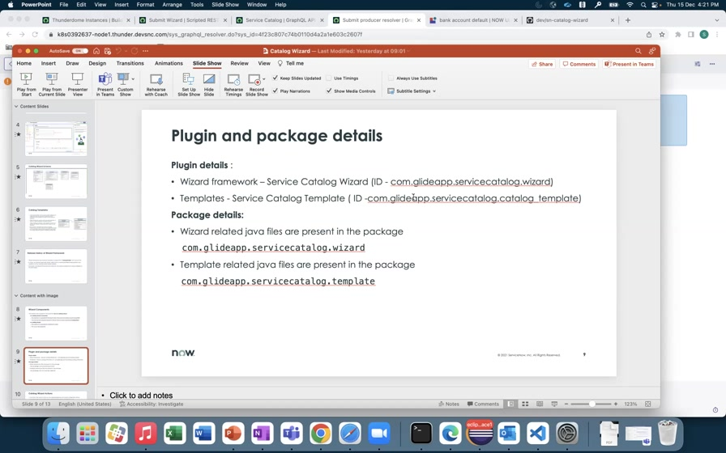
Plugin IDs and package names for the wizard framework and service catalog template components.
Action Assignment for Populate Referrer Details implemented as a client script that reads a reference and sets fields.
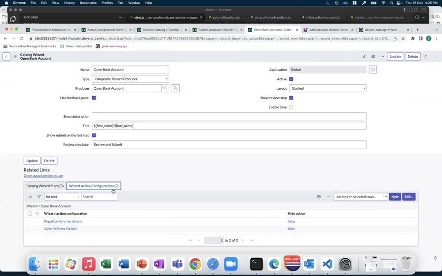
Wizard Action Configurations related list with Populate Referrer Details and View Referrer Details actions.
Runtime wizard step with Referrer and Details cards plus Save, Submit, Populate Referrer Details, and View Referrer Details buttons.
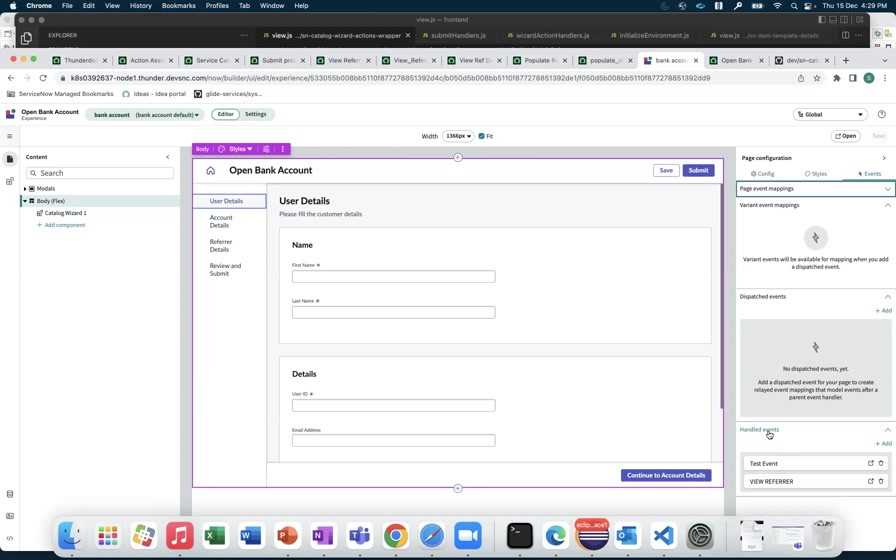
UI Builder Events panel where handled events are mapped for declarative action execution.
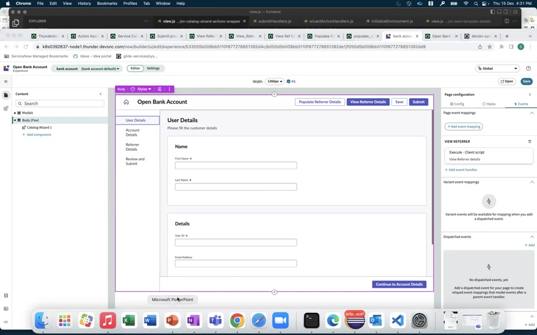
UI Builder page with mapped View Referrer action and top action buttons rendered in the wizard header.
Transcript
The transcript below is also available as Markdown and TXT downloads. It is time-coded from the visible demo flow.
Audio note: this package contains a complete time-coded visual/learning transcript from the screen recording. A verbatim spoken transcript was not generated because a local speech-to-text model was not available in this environment.
| Time | What happens |
|---|---|
| 00:00 | Opening/blank transition before the demo content is visible. |
| 01:00 | Initial slide sequence introduces the wizard framework around a catalog item creation experience. |
| 02:00 | The annotated Create Catalog Item screen explains the main UX concepts: wizard step navigator, wizard step label, wizard section, wizard question, wizard actions, and feedback panel. |
| 03:00 | The presenter continues explaining the wizard anatomy and how steps and questions are arranged for a guided catalog item flow. |
| 04:00 | ServiceNow classic UI opens the Composite Record Producer record named Open Bank Account. The form shows table name, active state, save options, description area, and producer configuration tabs. |
| 05:00 | The producer form remains in focus while the setup around description and related producer configuration is discussed. |
| 06:00 | A Producer Set named Create Bank Account is shown. It is mapped to the Bank Account table with parent reference field Customer, and variables such as branch_code, account_type, and address are visible. |
| 07:00 | The demo navigates through related producer set records and confirms the variables attached to the Create Bank Account setup. |
| 08:00 | The Composite Record Producer record is revisited, showing the Open Bank Account producer and its descriptive configuration. |
| 09:00 | The presenter transitions toward wizard setup after reviewing the producer and producer set dependencies. |
| 10:00 | The Catalog Wizard record named Open Bank Account is shown. It links to the Open Bank Account composite record producer, uses a stacked layout, has a feedback panel, and lists wizard steps. |
| 11:00 | Wizard step records under the Open Bank Account wizard are reviewed: User Details, Account Details, and Referrer Details. |
| 12:00 | The Catalog Wizard record shows title binding using variables such as first_name and last_name, plus a Review and Submit label and review-step configuration. |
| 13:00 | The wizard configuration continues with attention on how title, layout, save, and review behavior shape the final runtime page. |
| 14:00 | A Catalog Wizard Section record named Name is opened. It is configured as a Card with width 100%, belongs to the User Details step, and contains questions First Name and Last Name. |
| 15:00 | Additional wizard section/question relationships are discussed before moving to template concepts. |
| 16:00 | Catalog Templates slide explains that templates can prefill variables, enforce UI properties on questions, restrict values, and be applied to existing wizards. Tables sc_template and sc_template_detail are shown. |
| 17:00 | The presentation transitions from template theory into how the wizard appears in UI Builder. |
| 18:00 | UI Builder opens the Open Bank Account experience. The Catalog Wizard component renders the wizard with left navigation, User Details step, Name and Details cards, and a Continue button. |
| 19:00 | The component is selected in UI Builder and the surrounding page/container layout is inspected. |
| 20:00 | The Catalog Wizard component properties panel is shown. It includes Select wizard, Wizard mode, Field space, sys_id of record, Select template, Make template mandatory, and button properties. |
| 21:00 | The runtime/preview is used to check the wizard appearance after selecting component properties. |
| 22:00 | The runtime Open Bank Account wizard shows the Account Details step with Account Type radio buttons and Branch Details fields. Continue to Referrer Details and Back buttons are visible. |
| 23:00 | The demo reviews how values appear as read-only or populated depending on prior selections and template settings. |
| 24:00 | Mandatory override modal appears. Available options include Country and Email Address, while First Name is selected as mandatory. Save selections is available. |
| 25:00 | The presenter transitions from runtime/template behavior to source code and implementation internals. |
| 26:00 | A Git repository named dev/sn-catalog-wizard is shown with folders such as .bin, .github, drivers, example, src, setup, README, and JavaScript/SCSS language statistics. |
| 27:00 | The repository structure is used to explain where the catalog wizard component and support code live. |
| 28:00 | VS Code opens the sn-catalog-wizard connected component. Public properties include loading, isSuccess, wizard data/object, schema fields, errorMessage, and other component inputs. |
| 29:00 | The component code continues, showing how the frontend stores wizard data and state used while rendering. |
| 30:00 | VS Code highlights wizardData and dataFetching properties. The comments describe that wizard data is required to render steps and sections, and dataFetching controls data fetch mode. |
| 31:00 | UI Builder preview is revisited while the implementation details are correlated with visible component properties. |
| 32:00 | The UI Builder page shows a selected Catalog Wizard component. A demo template is selected and the rendered form shows First Name filled as Test with other fields greyed or pending. |
| 33:00 | The presenter checks how template selection and component properties influence the rendered wizard. |
| 34:00 | Eclipse/Java IDE is opened to inspect backend classes and GraphQL/service catalog related handlers. |
| 35:00 | Backend resolver and handler code are examined to explain how frontend actions reach the service catalog wizard server layer. |
| 36:00 | CatalogWizardHandlerJus.java is shown. Methods call CatalogWizardProcessor for submit, save, and can-access-target checks and return JSON responses. |
| 37:00 | The presenter moves back to frontend code to connect server behavior with UI submit and action flows. |
| 38:00 | submitHandlers.js is shown. It handles save clicks, submit wizard validation, dirty form state, action payloads, and submitting state. |
| 39:00 | The submit handler and related action handler files are reviewed to show how footer/header action events are dispatched. |
| 40:00 | view.js for the wizard component shows modal/footer click handlers and labels for return, continue, cancel, and home behavior. |
| 41:00 | The presenter reviews how UI text, modal choices, and footer click events are wired in the frontend component. |
| 42:00 | Wizard step view code is shown. It renders stacked steps, selected-step styling, hidden fragments, and click handlers for step navigation. |
| 43:00 | The code walkthrough continues through view and style files that control the left step navigator and component layout. |
| 44:00 | interceptors.js is shown. The template submit interceptor creates effects against a template submit URL and maps successful/failed save/submit action types. |
| 45:00 | The implementation walkthrough transitions back toward plugin/package information and configuration records. |
| 46:00 | Plugin and package details slide shows Service Catalog Wizard plugin ID com.glideapp.servicecatalog.catalog_wizard and template plugin/package identifiers including com.glideapp.servicecatalog.template. |
| 47:00 | The demo returns to ServiceNow configuration for declarative actions connected to the wizard. |
| 48:00 | Action Assignment populate_referrer is opened. It is implemented as a Client Script and uses g_form.getReference("referrer") to set email, department, and location fields. |
| 49:00 | The action configuration is reviewed to show conditions and related action-model fields. |
| 50:00 | The Catalog Wizard record shows Wizard Action Configurations for Populate Referrer Details and View Referrer Details, both visible and not hidden. |
| 51:00 | The presenter tests the runtime behavior of custom action buttons on the Open Bank Account wizard. |
| 52:00 | The runtime Referrer Details step is shown. The user enters Allyson Gillispie as referrer, and the page contains details fields for Referrer Location, Referrer Email, and Referrer Department with action buttons at the top. |
| 53:00 | The populated referrer/action behavior is checked against the field layout and custom buttons. |
| 54:00 | UI Builder Events panel is opened. It shows page event mappings, handled events, and an event named VIEW REFERRER ready for handler mapping. |
| 55:00 | The event mapping configuration is inspected to connect the wizard event with the correct action handler. |
| 56:00 | Final UI Builder view shows the action buttons Populate Referrer Details and View Referrer Details in the wizard header, with the VIEW REFERRER event mapped to execute a client script. |
| 56:40 | Recording ends shortly after the final UI Builder action/event mapping review. |